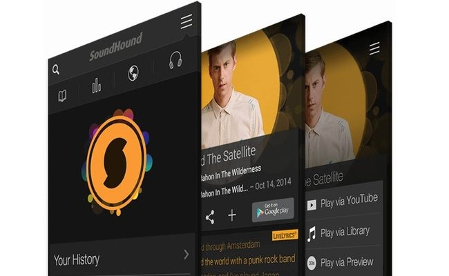
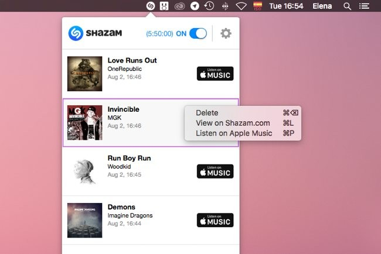

Quizás hayas pasado alguna vez por la situación de estar viendo una película o una serie, escuchar en una determinada escena una canción que te gusta, y no saber cómo se llama. Intentas quedarte con parte de la letra para buscarla luego, preguntas a familiares y amigos... pero es demasiado complicado.Por suerte, como en otras facetas de la vida, la tecnología está de tu parte. Hay varias maneras de averiguar el título de una canción que suena en una escena concreta de una película o serie de televisión, y no sólo eso, sino que además en muchos casos te ponen un enlace directo para que la puedas escuchar, o comprar en alguna tienda online tipo iTunes. Veamos cuáles son para que no te quedes sin saber el título de esa canción que tanto te ha gustado

No sólo existen apps para móvil que identifican música. Shazam cuenta con versiones para Windows y Mac de su aplicación, con la que puedes identificar todas las canciones que suenen a tu alrededor. Simplemente deja la aplicación activa, y ésta irá reconociendo las canciones.Luego, desde la lista de resultados, puedes ver la ficha de la canción en Shazam (con la letra, vídeos, etc.), escuchar un fragmento online o comprarla en iTunes.